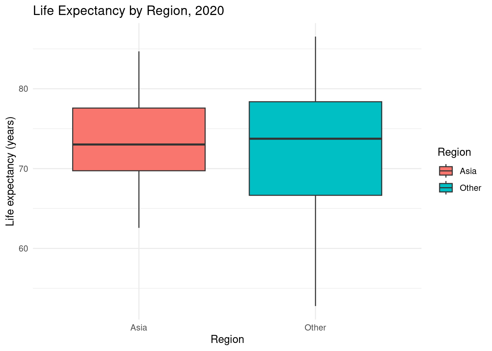
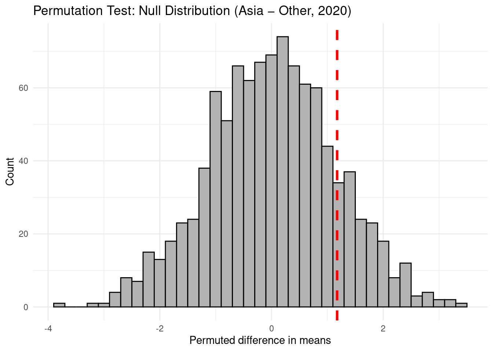
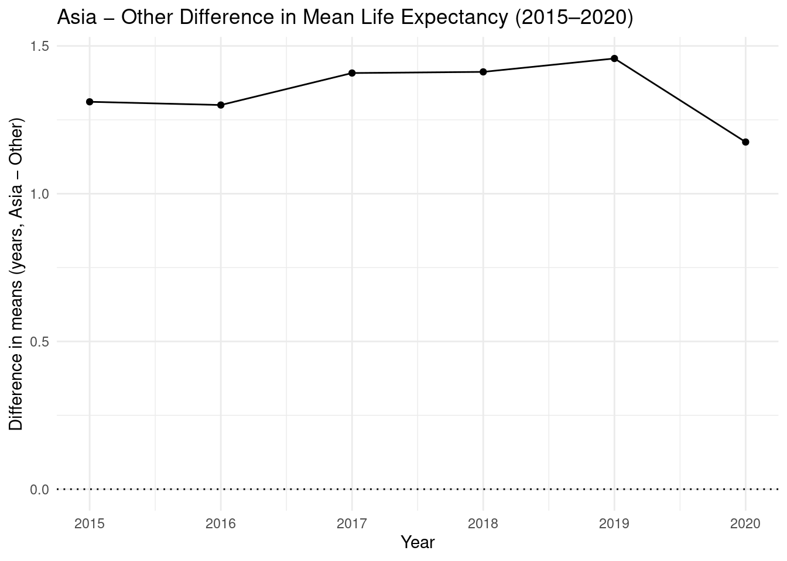

library(tidytuesdayR)
library(tidyverse)
# Load life_expectancy dataset directly from Github
life_expectancy <- readr::read_csv('https://raw.githubusercontent.com/rfordatascience/tidytuesday/main/data/2023/2023-12-05/life_expectancy.csv')
life_expectancy_different_ages <- readr::read_csv('https://raw.githubusercontent.com/rfordatascience/tidytuesday/main/data/2023/2023-12-05/life_expectancy_different_ages.csv')
life_expectancy_female_male <- readr::read_csv('https://raw.githubusercontent.com/rfordatascience/tidytuesday/main/data/2023/2023-12-05/life_expectancy_female_male.csv')
# Define Asia via Worldometer's country list (48 countries)
asia_countries <- c(
"India", "China", "Indonesia", "Pakistan", "Bangladesh", "Japan",
"Philippines", "Vietnam", "Iran", "Turkey", "Thailand", "Myanmar",
"South Korea", "Iraq", "Afghanistan", "Yemen", "Uzbekistan",
"Malaysia", "Saudi Arabia", "Nepal", "North Korea", "Syria",
"Sri Lanka", "Kazakhstan", "Cambodia", "Jordan",
"United Arab Emirates", "Tajikistan", "Azerbaijan", "Israel",
"Laos", "Turkmenistan", "Kyrgyzstan", "Singapore", "Lebanon",
"State of Palestine", "Oman", "Kuwait", "Georgia", "Mongolia",
"Qatar", "Armenia", "Bahrain", "Timor-Leste", "Cyprus",
"Bhutan", "Maldives", "Brunei"
)
# Add region indicator to full dataset
life_expectancy <- life_expectancy %>%
mutate(
region = if_else(Entity %in% asia_countries, "Asia", "Other")
)
le_2020 <- life_expectancy %>%
filter(Year == 2020)A Permutation‑Based Comparison of Life Expectancy in Asian and Non‑Asian Countries in 2020
Introduction
This analysis investigates whether mean life expectancy in Asian countries in 2020 differs (either higher or lower) from that of non‑Asian countries. Because the 2020 dataset includes nearly all countries with available estimates, the observed Asia–Other gap is treated as the actual difference for this set of countries, and a permutation procedure is used as a randomization‑based simulation to evaluate how extreme this difference is under a null model where Asia/Other labels are unrelated to life expectancy. To provide context for interpreting 2020, the analysis also summarizes Asia–Other differences in several pre‑pandemic years, allowing the 2020 result to be compared against recent historical patterns.
Hypotheses
H₀: The mean life expectancy in Asian countries in 2020 is the same as the mean life expectancy in non‑Asian countries (no difference).
Hₐ: The mean life expectancy in Asian countries in 2020 is different from the mean life expectancy in non‑Asian countries (two‑sided).
Methods
Simulation plan
Filter the dataset to 2020, keeping one life‑expectancy value per country and labeling each country as “Asia” or “Other.”
Compute the observed Asia–Other difference in mean life expectancy; this is treated as the realized gap for the set of countries with 2020 data.
Use a permutation procedure that randomly shuffles the Asia/Other labels across countries and recomputes the mean difference, repeating this 1,000 times to simulate what gaps would look like if region labels were unrelated to life expectancy.
Visualize both the observed 2020 difference and the permutation‑based null distribution.
Additionally, compute and summarize Asia–Other mean differences for several pre‑pandemic years (e.g., 2015–2019) to place the 2020 gap in recent historical context.
Use these results to assess whether the 2020 Asia–Other gap is unusually large in absolute value under the null and how it compares with pre‑2020 patterns.
A permutation test is used to evaluate whether the observed 2020 difference in mean life expectancy between Asia and the rest of the world is larger in absolute value than we would expect if region labels were unrelated to life expectancy. This non‑parametric, randomization‑based approach does not assume normality and is robust to outliers or heterogeneous country‑level data.
Observed quantity:The 2020 difference in group means (Asia minus Other), computed from nearly all countries with available life‑expectancy estimates; this is treated as the realized population gap for that year.
Null distribution: Generated by randomly shuffling the Asia/Other labels across countries and recomputing this difference 1,000 times, representing a hypothetical world in which region has no association with life expectancy and any Asia–Other gap arises purely from random label assignment.
Empirical p‑value: The proportion of simulated differences whose absolute value is at least as large as the absolute observed difference, corresponding to a two‑sided test of “no difference” versus “different.”
Description of functions
A custom function, diff_in_means(), computes the difference in mean life expectancy between Asian and non‑Asian countries (Asia minus Other) for a given dataset. A second function, perm_step(), performs one permutation step by shuffling the region labels, recalculating this difference, and returning both the observed and permuted values. This permutation step is repeated 1,000 times using a mapping routine to generate a null sampling distribution of the difference in means under the assumption that region and life expectancy are unrelated.
The empirical p‑value is then calculated as the proportion of permuted differences whose absolute value is at least as large as the absolute observed difference, providing a two‑sided measure of how strongly the data contradict the null hypothesis that mean life expectancy is the same in Asian and non‑Asian countries.
Code
# Permutation test for 2020 (Asia vs Other)
# Test statistic: difference in means (Asia - Other)
diff_in_means <- function(x, g) {
x_asia <- x[g == "Asia"]
x_other <- x[g == "Other"]
mean(x_asia, na.rm = TRUE) - mean(x_other, na.rm = TRUE)
}
# Observed 2020 gap (treated as realized population difference for these countries)
obs_diff_2020 <- with(le_2020, diff_in_means(LifeExpectancy, region))
obs_diff_2020[1] 1.174771# Single permutation step: shuffle labels, recompute difference
perm_step <- function(rep, data) {
shuffled_region <- sample(data$region, replace = FALSE)
tibble(
rep = rep,
obs_diff = diff_in_means(data$LifeExpectancy, data$region),
perm_diff = diff_in_means(data$LifeExpectancy, shuffled_region)
)
}
# Build null sampling distribution via permutation
set.seed(47)
perm_stats_2020 <- map(1:1000, perm_step, data = le_2020) %>%
list_rbind()
# Two-sided empirical p-value: |perm_diff| >= |obs_diff|
obs_diff_2020 <- unique(perm_stats_2020$obs_diff)
p_val_2020 <- perm_stats_2020 %>%
summarise(
p_val_two_sided = mean(abs(perm_diff) >= abs(obs_diff_2020))
)
p_val_2020# A tibble: 1 × 1
p_val_two_sided
<dbl>
1 0.291# Pre‑pandemic context (2015–2019)
# Compute Asia − Other mean difference for each year 2015–2019
pre_pandemic_diffs <- life_expectancy %>%
filter(Year >= 2015, Year <= 2019) %>%
group_by(Year, region) %>%
summarise(
mean_le = mean(LifeExpectancy, na.rm = TRUE),
.groups = "drop"
) %>%
pivot_wider(names_from = region, values_from = mean_le) %>%
mutate(diff_Asia_Other = Asia - Other)
pre_pandemic_diffs# A tibble: 5 × 4
Year Asia Other diff_Asia_Other
<dbl> <dbl> <dbl> <dbl>
1 2015 73.6 72.3 1.31
2 2016 73.8 72.5 1.30
3 2017 74.1 72.7 1.41
4 2018 74.4 72.9 1.41
5 2019 74.6 73.1 1.46Results and Visualization
Results Interpretation:
The observed difference in mean life expectancy between Asia and other regions in 2020 is about 1.17 years, with Asia having the higher average. Under the null hypothesis that region (Asia vs Other) has no effect on life expectancy, about 29.1% of the permuted datasets produced a difference in means at least as large as this observed gap in absolute value. In other words, if the labels “Asia” and “Other” were really random with respect to life expectancy, a gap as large as 1.17 years would appear in roughly 3 out of 10 permutations purely by chance. Because this two‑sided p‑value (0.291) is much larger than a typical significance level such as 0.05, the observed Asia–Other difference is not unusually large relative to the null distribution, so the permutation test provides little evidence against the null hypothesis that mean life expectancy is the same in Asian and non‑Asian countries in 2020.
Looking across earlier years, Asia’s mean life expectancy from 2015 to 2019 was consistently about 1.3–1.5 years higher than that of non‑Asian countries. The 2020 gap of 1.17 years is slightly smaller but of similar magnitude, indicating that the Asia–Other difference in the first pandemic year is broadly consistent with recent pre‑pandemic patterns rather than representing a dramatic new divergence.
Figure 1. Life Expectancy by Region, 2020
# Plot: Boxplot of data by region
le_2020 <- life_expectancy %>%
filter(Year == 2020)
ggplot(le_2020, aes(x = region, y = LifeExpectancy, fill = region)) +
geom_boxplot() +
labs(
title = "Life Expectancy by Region, 2020",
x = "Region",
y = "Life expectancy (years)",
fill = "Region"
) +
theme_minimal()
This boxplot shows country‑level life expectancy in 2020 for Asia and for all other regions. The medians and interquartile ranges are similar, and the ranges overlap substantially, indicating that typical life expectancy levels are comparable between Asian and non‑Asian countries rather than dramatically different in this year.
Figure 2. Permutation Test: Null Distribution (Asia − Other, 2020)
# Plot null distribution with observed difference
perm_stats_2020 %>%
ggplot(aes(x = perm_diff)) +
geom_histogram(binwidth = 0.2, fill = "grey70", color = "black") +
geom_vline(
aes(xintercept = obs_diff_2020),
color = "red", linetype = "dashed", size = 1.2
) +
labs(
title = "Permutation Test: Null Distribution (Asia − Other, 2020)",
x = "Permuted difference in means",
y = "Count"
) +
theme_minimal()
This histogram displays the null sampling distribution of the difference in mean life expectancy (Asia minus Other) generated by 1,000 random shuffles of the region labels. The red dashed line marks the observed 2020 gap of about 1.17 years. Because this observed value lies well inside the main bulk of the permuted differences, it is not unusually large under the null model where region is unrelated to life expectancy, consistent with a two‑sided permutation p‑value of approximately 0.29.
Figure 3. Asia − Other Difference in Mean Life Expectancy, 2015–2020
# Line plot of Asia−Other mean difference 2015–2020
pre_post_diffs <- pre_pandemic_diffs %>%
select(Year, diff_Asia_Other) %>%
bind_rows(
tibble(Year = 2020, diff_Asia_Other = obs_diff_2020)
)
ggplot(pre_post_diffs, aes(x = Year, y = diff_Asia_Other)) +
geom_line() +
geom_point() +
geom_hline(yintercept = 0, linetype = "dotted") +
labs(
title = "Asia − Other Difference in Mean Life Expectancy (2015–2020)",
x = "Year",
y = "Difference in means (years, Asia − Other)"
) +
theme_minimal()
This line plot tracks the difference in mean life expectancy (Asia - Other) from 2015 through 2020. Asia’s average life expectancy is consistently about 1.3–1.5 years higher than that of other regions before the pandemic, and the 2020 gap of 1.17 years is slightly smaller but similar in magnitude, suggesting that the first pandemic year did not create a qualitatively new divergence between Asia and the rest of the world.
References / Data Source
The data for this project come from the TidyTuesday 2023‑12‑05 release on life expectancy, which republishes country‑level estimates from the Our World in Data Life Expectancy report. That report’s “Key Insights” figures draw on estimates from the United Nations World Population Prospects (2022), the Human Mortality Database (2023), Zijdeman and Ribeira da Silva (2015), and Riley (2005), with minor processing by Our World in Data. TidyTuesday provides three CSV files (life_expectancy, life_expectancy_different_ages, and life_expectancy_female_male); this analysis uses the life_expectancy file and restricts to country‑level observations for the year 2020.
TidyTuesday dataset
R4DS Online Learning Community. (2023). TidyTuesday: 2023‑12‑05 – Life expectancy [Data set]. GitHub. https://github.com/rfordatascience/tidytuesday/tree/main/data/2023/2023-12-05
Our World in Data topic page
Dattani, S., Rodés‑Guirao, L., Ritchie, H., Ortiz‑Ospina, E., & Roser, M. (2023). Life expectancy. Our World in Data. https://ourworldindata.org/life-expectancy
Asia is defined using the country list provided by Worldometer’s “How many countries are there in Asia?” page
Worldometer. (n.d.). How many countries are there in Asia? Retrieved [Month Day, Year], from https://www.worldometers.info/geography/how-many-countries-in-asia/